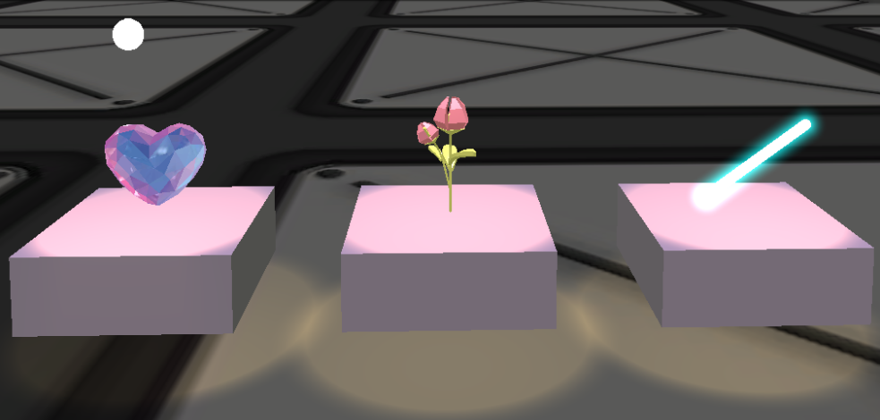
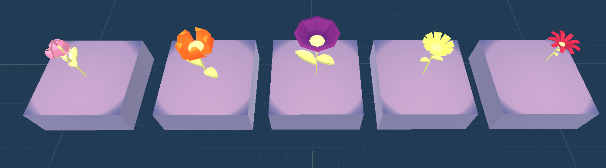
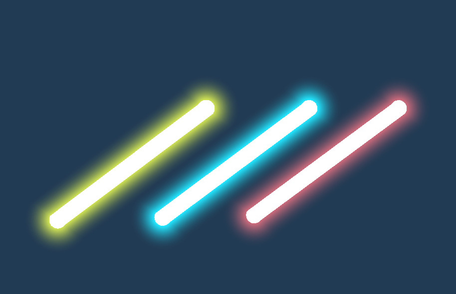

Inspired by live comments and The Wave XR virtual concerts. A combination of two product which allows people to share live thoughts, express appreciation with objects and visual effects. In this experience, you will be watching APOKI dancing and singing to her song “Get It Out”. You can look and move around in the space. What’s more? You can grab the cheering items to express or deliver how much you enjoy the experience. You can make little hearts floating around, shoot flowers to the performers, or even wave a light stick because you’re excited. The cheering objects can change colors and forms,to meet your preferences. Pick one that you like!
There are 3 interactable items in this project.

The Heart Item has 3 different particle systems and 4 different materials attached to it. You can press the right primary
button to switch the particle systems and the right secondary button to switch the colors.
The default particle system is a simple velocity tracked. If you move the object. Then there will be smaller hearts comming out.
The second is a bigger particle system to make hearts to float around you.
The third is a shootable object, which you can shoot a particle system out.
There are 5 flowers modes you can choose. You can also press the trigger to shoot the flower as well.
The light stick has 1 particle system which leaves trails when it's moving, and 3 colors to choose from.

APOKI - GET IT OUT
Who is APOKI?
Virtual Artist, Singer, Dancer.
Apoki is Korea's most renowned virtual artist. With her unique concept, music and performances that only she can pull off,
APOKI is establishing herself as an unrivaled iconic figure. She currently has roughly 1.7 million fans on
YOUTUBE, TIKTOK and INSTAGRAM,
and is constantly amazing them with her spectacular musical talents.
APOKI-Get It Out
Christian Eckhardt - CSC377 Intro to MR No link available. Please take CSC 377 if you are interested. Thank you Christian. Valem - Introduction to VR series Youtube - Valem VR with Andrew - Menu System for VR series Youtube - VR with Andrew GameDevBill - Unirt Shader Graph Intro Youtube - GameDevBill
To Grab Objects - Grip
_When controller point to an interactable object, a line would appear. Press the Grip button to grab it.
To Teleport - Trigger
_Lightly Press on Trigger to enable teleporting and see the telepotation target. Press down the Trigger to teleport.
To Move Around - Left Joystick
_Move the joystick to move without walking in real life.
To Turn Camera Horizontaly - Right Joystick
_Move the Joystick Left or Right to turn the cAMERA WITHOUT TURNING HEad
To Change Object Mode - Right Primary Button
_Some Object have various modes, press the right primary button to switch mode.
To Change Object Color - Right Secondary Button
_Some Object have different colors, press the right secondary button to switch colors.
To Shoot Flowers - Right Trigger
_While you are holding the cheering object, press trigger to shoot the item!
Mode Switcher -- A script that allows objects to switch among multiple materials and modes when buttons are pressed. Modes are considered as gameobjects. For example, the heart item can switch among 3 type of particle systems. All the materials and modes are kept as lists, so they can be easily modified. Object Hold and Return -- A script that allows the cheering item to return in a nice way to where it is supposed to go.
UI Menu system, galaxy shader and material, VR move around, Camera turning, trailing particle system, etc.
XR interaction toolkit, Assets from Unity Stores (Not Specified Here), Youtube Videos.
Hello, Thank you very much for playing. I appreciate your time. For real. I am currently a 4th year CS & LAES student, also minor in CIA. I love cumputer graphics and hope to make something everyone would love. I am also very into dancing. Hence a great virtual dancer video for this project. This project is how I envisioned virtual concert. Player can interact by giving out flowers. Have special effects in such as hearts floating around, and shoot out hearts to the artists! Pretty exciting to me. I was inspired by live comments and the virtual concerts hosted by THE WAVE XR. Again, thank you for playing! I hope you enjoyed the experience.
If you have any questions, you can reach me by emails
This unity project is build based on Vive Cosmos Headset. I have not tested the project on other headsets.